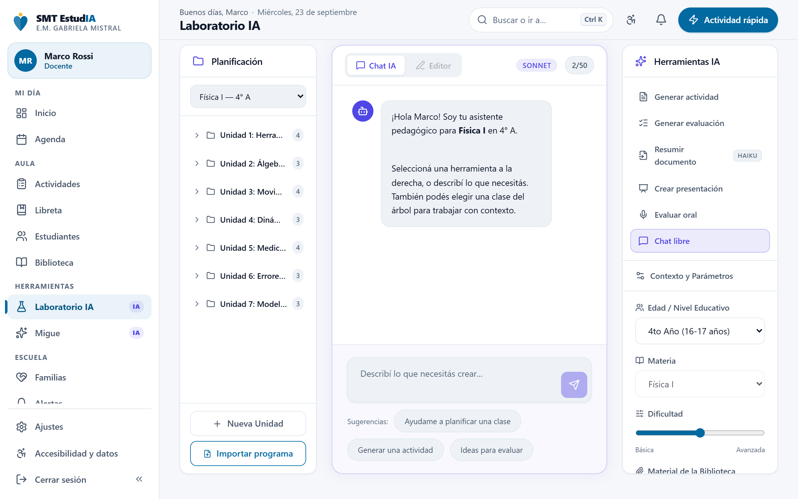
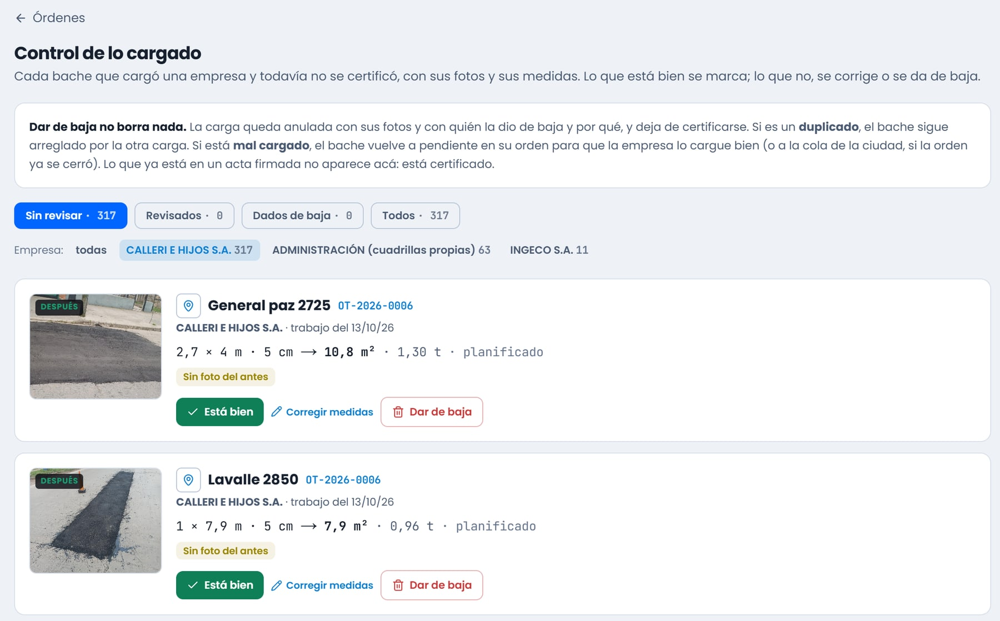
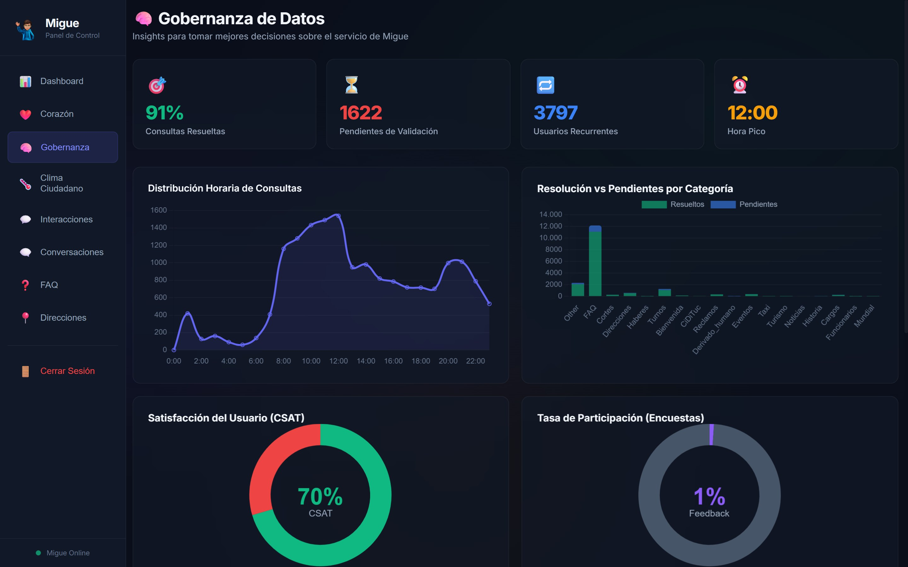
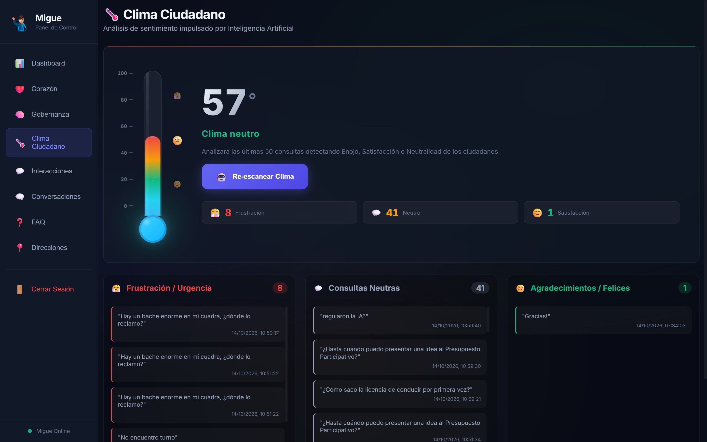

La IA redacta la nota con el mismo criterio; la persona revisa y firma.
10tipos de nota Gobierno delCHACO
Gobierno delCHACO
Gobernar con IA · Capacitación para los 70 municipios del Chaco
IA para Gobiernos Locales · Módulo 6
Gobernar la IA agéntica en el Estado
De la IA individual a la IA institucional
Dr. Marco Rossi · Director de Inteligencia Artificial
Municipalidad de San Miguel de Tucumán
Noviembre de 2026 · Presidencia Roque Sáenz Peña, Chaco
El plan
Módulo 6Primero lo que ya funciona; después, siete preguntas para gobernarlo- 1De la IA individual a la institucional¿Qué cambia cuando la IA deja de ser de cada uno?
- 2Las capas: licencias, datos e IA soberana¿Qué se contrata, qué se conecta, qué se construye?
- 3Del piloto a la producción¿Por qué tantos proyectos no escalan?
- 4La economía de los agentes¿Cuánto cuesta de verdad?
- 5Gobernanza del agente¿Quién responde por lo que hace un agente?
- 6El costo que la factura no muestra¿Qué capacidades perdemos si delegamos todo?
- 7Hoja de ruta para Chaco¿Por dónde empieza cada municipio?
Cómo empezó
San Miguel de TucumánDe una oficina nueva a servicios para toda la ciudad🏛️Junio 2025
Nace la Dirección de IA
Decreto 0358/INT/2025🎓2025–2026
Diagnóstico y capacitación
34 gerentes de datos · 71 egresados📜Diciembre 2025
Reglas claras
Decreto 0596 · Guía Práctica y Ética🏢2026
Herramientas internas
Generador de Notas · Tableros de trabajo🤝2026
Para el vecino
Ciudad Digital · Ciudad abierta · UrbanIA🚀Hoy
Migue · CIMBA · EstudIA
17.848 consultas4.316 baches2.000 alumnos0
Primero
Lo que ya funciona
Diez desarrollos en San Miguel de Tucumán: qué problema resuelve cada uno y cómo se usa.
Lo que ya funciona
San Miguel de TucumánDiez desarrollos: qué resuelve cada uno1Puertas adentro
Carga de trabajo, alertas y trazabilidad de cada proceso.
5claves en un tablero2Para el vecino
Responde trámites y consultas las 24 horas, en Ciudad Digital.
17.848consultasOrdena los reclamos de baches y sigue cada arreglo, con foto.
4.316bachesIA segura en la escuela: el docente arma la actividad en un minuto.
2.000alumnosCruza lo que dicen los vecinos en las audiencias con cada norma.
10audiencias analizadasLa IA ayuda a armar el proyecto para el barrio.
20distritosDel Excel a certificar el trabajo de las cooperativas con un clic.
218espacios verdesReservas y consultas de los turistas, con Migue.
488conversacionesFoto, costos y vidriera para cada feriante.
Marketplacecon IAEn vivo
MigueChatear con Migue, como cualquier vecino
EN VIVO
Migue
Así lo usa un vecino: en Ciudad Digital, la puerta única de la ciudad, sin iniciar sesión.
ciudaddigital.smt.gob.ar
- Abrimos Ciudad DigitalLa puerta única de trámites, como la ve cualquier vecino.
- Tocamos el botón de MigueAbajo a la derecha.
- Le preguntamos algo de todos los días«Hay un bache enorme en mi cuadra, ¿dónde lo reclamo?»
En vivo
CIMBAEl sistema real, en uso
EN VIVO
CIMBA
Del reclamo al bache reparado, con cada paso trazado.
cimba.smt.gob.ar
- El mapa: lo pedido y lo hechoCada reclamo y cada arreglo, ubicados en la ciudad.
- Cómo entra y cómo se cierra un reclamoLa IA clasifica y detecta duplicados; una persona cierra, con foto.
- El control de lo cargadoCada carga de una empresa, revisada antes de certificarse.
En vivo
EstudIAEl costo de la IA, a la vista
EN VIVO
EstudIA
La IA en la escuela, con tope y costo a la vista.
estudia.smt.gob.ar
- El Laboratorio IAEl contador de usos a la vista y un modelo distinto según la tarea.
- El docente elige, la IA arma el borradorUna actividad en un minuto; el docente revisa y decide.
- El panel de consumo de IACuánto se usa y cuánto cuesta.
1
Bloque 1 de 7
De la IA individual a la IA institucional
¿Qué cambia cuando la IA deja de ser de cada uno y pasa a ser de toda la institución?
Pregunta a la sala
✋
¿Quién usa IA en su trabajo?
¿Y quién lo hace con una cuenta personal?
Ahí empieza la IA individual: útil, pero sin reglas, sin registro y con los datos afuera.
Cuatro niveles
De uno a todosLo que cambia en cada escalónCada uno usa la herramienta que conoce, con su propia cuenta.
- Quién paga
- Cada uno, o nadie
- Dónde quedan los datos
- En cuentas personales
- Quién responde
- No está claro
Un área elige un servicio y lo usa para su tarea.
- Quién paga
- El área, sin contrato marco
- Dónde quedan los datos
- En un proveedor, con condiciones estándar
- Quién responde
- El jefe del área
La gestión fija reglas, contrata y conecta la IA con sus sistemas.
- Quién paga
- El municipio, con contrato
- Dónde quedan los datos
- Con condiciones escritas
- Quién responde
- Quien firma
Un agente consulta, redacta y registra en los sistemas, con permisos.
- Quién paga
- Por uso: cada paso consume tokens
- Dónde quedan los datos
- El agente los lee y los escribe
- Quién responde
- Quien autorizó el permiso
IA agéntica
Qué cambiaDel chat que responde al agente que actúa
Chat
Responde
Pregunta→Respuesta
Una llamada al modelo. Si se equivoca, lo ves y lo descartás.
Agente
Actúa
Objetivo→Planifica→Usa herramientas→Revisa→Resultado
Repite hasta terminar: muchas llamadas por tarea
Consulta sistemas, redacta y registra. Si se equivoca, el error ya está hecho.
La IA interpreta
Entiende el pedido, clasifica y propone. En CIMBA: detecta duplicados y clasifica cada reclamo.
Los sistemas ejecutan
Registran, ordenan y avisan, con reglas fijas y trazables.
Las personas deciden
Aprueban, firman y responden. En CIMBA: el cierre es un clic de una persona, con foto.
2
Bloque 2 de 7
Las capas de la IA institucional
¿Qué se contrata, qué se conecta y qué conviene construir?
Las capas
IA institucionalCada capa se gobierna distinto5PersonasSupervisión, firma y capacidades
En San Miguel de Tucumán34 gerentes de datos · Decreto 0596: la firma es humana
Bloques 5 y 64AgentesPermisos y registro de cada acción
En San Miguel de TucumánMigue atiende las 24 horas en Ciudad Digital, Telegram y WhatsApp
Bloque 53IntegraciónAcceso a los sistemas que ya existen
En San Miguel de TucumánCIMBA conecta 6 canales de reclamos, 12 empresas y SIGOV
Bloques 2 y 32DatosCalidad, propiedad y privacidad
En San Miguel de Tucumán218 espacios verdes georreferenciados · 4.316 baches con lugar y fecha
Bloque 21ModelosLicencias, condiciones y costo por uso
En San Miguel de TucumánEstudIA: tope de 50 usos por día y costo a la vista
Bloques 2 y 4Licencias
Qué contratarOcho condiciones antes de firmar01🔒Datos que no entrenan
Lo que cargamos no se usa para entrenar modelos.
02🌎Dónde quedan los datos
Jurisdicción, retención y borrado, por escrito.
03👤Cuentas institucionales
Usuarios del municipio, con alta y baja centralizadas.
04🧾Registro de uso
Quién usó qué y cuándo, exportable para auditar.
05🧮Precio por uso, con tope
Tarifa por token, topes y alertas de consumo.
06🚪Salida sin rehenes
Exportar datos y configuraciones si cambiamos de proveedor.
07🔌Acceso por API
Para integrarlo con los sistemas propios, no solo por chat.
08🛟Continuidad y soporte
Aviso de cambios de modelo, disponibilidad y soporte.
!
Para recordar
Contratar IA no es una compra más: es una decisión de gobierno.
Detrás de escena
CIMBASeis canales y doce empresas, conectados
Entran · 6 canalesSale y se conecta
147
Concejo
S.A.T.
Secretarías
Redes
Ciudad Digital
CIMBALa IA detecta duplicados y clasifica cada pedido
12 empresas cada arreglo, con su empresa
SIGOV
Mapa lo pedido y lo hecho
Foto de antes y después
Cierre del reclamo en 1 clic
6canales de reclamos en una sola bandeja
12empresas trabajando en el mismo sistema
880 tde mezcla asfáltica, trazada
1.383arreglos con foto de antes y después
Detrás de escena
MigueUna puerta, conectada a las fuentes oficiales
Busca en · fuentes oficialesResponde en
Guía de Trámites
Turnos
Reclamos
Cortes de tránsito
MigueEntiende el pedido y busca la respuesta en fuentes oficiales, las 24 horas
Ciudad Digital 160.000 vecinos con cuenta
Telegram
WhatsApp
17.848consultas respondidas
91 %resueltas
99,8 %llegan por Ciudad Digital
3.797vecinos que vuelven a consultar
IA soberana
¿Cuándo conviene?Depende de qué datos toca y cuánto se usa
Sensibilidad de los datos →
Volumen de uso →
Datos sensibles · poco usoComercial con cláusulas fuertes
O anonimizar antes de enviar. Ejemplo: analizar un expediente puntual.
Datos sensibles · uso masivoSoberana: propia o compartida
Modelo en infraestructura propia. Ejemplo: padrones y datos personales a escala.
Datos no sensibles · poco usoComercial con licencia institucional
Redactar, resumir, traducir, con cuentas del municipio.
Datos no sensibles · uso masivoComercial por API, con topes
Atención con información pública. Precio por uso y alertas.
Soberana conviene si…
- Toca datos personales sensibles a escala.
- El costo por uso ya supera lo que cuesta operar infraestructura.
- Hay un equipo técnico para mantenerla.
No conviene si…
- No hay presupuesto todos los meses.
- Nadie puede actualizarla ni auditarla.
?
Para 70 municipios
¿Soberanía municipal, o una infraestructura provincial compartida?
3
Bloque 3 de 7
Del piloto a la producción
¿Por qué tantos proyectos de IA se quedan en la prueba?
Del piloto
A la producciónPor qué tantos proyectos se quedan en la pruebaIdeastodas las áreas tienen
Pilotosse prueban algunas
En produccióncon datos reales
En uso diariola gente lo pide
🙋Sin dueñoNadie del área lo siente propio.
🗂️Sin datosLa información está en planillas sueltas.
🔌Sin integraciónNo se conecta con los sistemas que ya existen.
📜Sin reglasNadie sabe qué se puede hacer y qué no.
💸Sin presupuesto de usoSe paga la prueba, no el uso de todos los meses.
🎓Sin capacitaciónLa herramienta llega antes que las personas.
!
Para recordar
Un piloto prueba la tecnología. La producción prueba a la organización.
El camino
Primero adentroLo usamos nosotros; después, el vecino1Puertas adentro
- 10tipos de nota · Generador de Notas, la que abrió la puerta
- 5claves en un tablero · Trabajo inteligente
- 34gerentes de datos · Capacitación
2Para el vecino por Ciudad Digital · 160.000 vecinos
- 17.848consultas · Migue
- 4.316baches · CIMBA
- 2.000alumnos · EstudIA
- Mesesde grabación y deliberación · UrbanIA
- +4servicios · Presupuesto Participativo, Applaza, Bus Turístico, FerIA
Checklist
Antes del pilotoSeis preguntas para llevarse al municipio✓¿Quién es el dueño?Un área que lo pide y lo va a usar todos los días.
✓¿Qué regla lo cubre?Qué puede hacer la IA, qué no, y quién firma.
✓¿De dónde salen los datos?Si están en planillas sueltas, ese es el primer trabajo.
✓¿Quién paga el uso?No el piloto: el consumo de todos los meses.
✓¿Con qué sistema se conecta?Lo que no se integra, se abandona.
✓¿Quién capacita?La capacitación va con la herramienta, no después.
?
Regla práctica
Si alguna respuesta es «no sabemos», todavía no es momento de lanzar.
4
Bloque 4 de 7
La economía de los agentes
¿Cuánto cuesta de verdad, y por qué la factura sorprende?
Tokens
La unidad de cobroSe cobra por pedazos de texto, no por consulta
La pregunta de un vecino, cortada en tokens
¿Dónde reclamo un bache en mi cuadra?
12tokens, aproximadamenteEjemplo ilustrativo: cada modelo corta distinto
⇄Se cobra lo que entra y lo que sale
La pregunta y la respuesta tienen precio propio.
📚Todo lo que el modelo lee cuenta
Instrucciones, documentos y la conversación anterior, en cada llamada.
📏Más largo, más caro
Una respuesta larga cuesta más que una corta.
El multiplicador
AgentesCada paso del agente relee todo lo anterior
Chat
1 llamada
1.500Respuesta
Agente
6 pasos para una tarea
1.500Paso 1
2.300Paso 2
3.100Paso 3
3.900Paso 4
4.700Paso 5
5.500Paso 6
Una sola tarea
21.000tokens, contra 1.500 de un chat
≈ 14×Y cada reintento suma otra barra.
≈ 14×Y cada reintento suma otra barra.
Ejemplo ilustrativo: 1.500 tokens de instrucciones y pedido, y 800 más por cada paso que el agente acumula y relee.
Costo efectivo
Lo que no dice la listaEl precio por token es el piso, no la factura
Proporciones ilustrativas
Precio publicado
Contexto que se relee
Pasos del agente
Reintentos y errores
Herramientas y búsquedas
Integración, soporte y personas
Costo efectivo
Costo por tarea
tokens por paso × pasos × precio
+ reintentos
+ lo que no son tokens: integración, soporte y horas de personas
!
La pregunta útil
No cuánto cuesta el token: cuánto cuesta cada trámite resuelto.
Presupuestar
AgentesCinco reglas para que la factura no sorprenda
Tope a la vista: 2 de 50 Modelo liviano para resumir- 1Tope por usuario y por sistema50 usos por día por docente, con el contador a la vista.
- 2El modelo justo para cada tareaUno grande para conversar, uno liviano para resumir.
- 3Costo a la vistaEl piloto de EstudIA: US$ 0,017 en 30 días.
- 4Costo por tarea resueltaCuánto cuesta cada trámite o reclamo resuelto.
- 5Alertas antes del límiteAvisos con tiempo, antes de que se corte el servicio.
5
Bloque 5 de 7
Gobernanza del agente
Supervisión humana, permisos, trazabilidad: ¿quién responde por lo que hace un agente?
Primero
Las reglasDecreto 0596/INT/2025 · Guía Práctica y Ética de Uso de IA🧑⚖️Supervisión humana
⚖️Equidad
🔒Privacidad
👁️Transparencia
🧾Rendición de cuentas
1guía práctica y ética, para todas las áreas
100%de las decisiones, con una persona que firma
∞capacitación constante
!
Guía Práctica y Ética de Uso de IA
“La decisión final, la firma, la responsabilidad, es y será siempre humana.”
Permisos
SemáforoNo todo se delega igualVerdeLo hace solo
- Responder con información pública
- Clasificar y ordenar pedidos
- Buscar y resumir normas y documentos
ÁmbarPropone; una persona aprueba
- Redactar notas y respuestas
- Cerrar un reclamo
- Cruzar lo que pidió el vecino con la norma
RojoNunca solo
- Firmar
- Sancionar o multar
- Pagar o adjudicar
- Decidir sobre los derechos de una persona
Trazabilidad
Quién hizo quéCada acción deja registro, y nada se borra
Dar de baja no borra nada📝¿Qué se hizo?Cada carga, con sus fotos y sus medidas.
🏗️¿Quién y cuándo?La empresa que la cargó y la fecha del trabajo.
✅¿Quién lo revisó?Una persona la marca bien, la corrige o la da de baja.
🗂️¿Por qué se anuló?Queda quién la dio de baja y por qué, con sus fotos.
!ResponsabilidadUn agente no tiene responsabilidad: la tiene quien dio el permiso y quien firma.
El tablero
MigueLa gobernanza de datos de un agente, en un solo lugar

❤️CorazónLas consultas, minuto a minuto, en vivo.
🧠Gobernanza91 % resueltas · 1.622 pendientes de validación · hora pico, 12:00.
🌡️Clima ciudadanoLa IA lee el sentimiento de las últimas consultas.
😊SatisfacciónEncuestas a los vecinos: 70 % satisfechos.
💬Interacciones y FAQCada consulta, para revisar; lo que Migue sabe y lo que hay que enseñarle.
✓Se gobierna con datosTodos los días, no una vez por año.
En vivo
MigueEl tablero real, ahora
EN VIVO
Migue
El tablero con el que gobernamos al asistente de la ciudad.
migue.smt.gob.ar/dashboard
- El corazónLas consultas de los vecinos, minuto a minuto.
- La gobernanza y el clima ciudadanoQué resuelve, qué falta validar y cómo se sienten los vecinos.
- Una pregunta en vivoLe preguntamos a Migue y la vemos entrar al tablero.
6
Bloque 6 de 7
El costo que la factura no muestra
Sedentarismo cognitivo: ¿qué capacidades perdemos si delegamos todo?
Lo que no se ve
Sedentarismo cognitivoEl criterio se pierde si no se usa- ✍️Firmar sin leer lo que redactó la IA
- 📋Copiar la respuesta sin chequear la fuente
- 🧭Perder el criterio para detectar un error
- 🔌No poder hacer la tarea si el sistema se cae
- 🧑🏫La IA arma el borrador; la persona decide
- ❓Pedirle que explique por qué
- 🔎Revisar la fuente antes de firmar
- 💬Usarla para discutir una idea, no para obedecer
SMT EstudIA
“La IA ayuda a pensar, no hace la tarea.”
Capacidades
Cómo cuidarlasCuatro prácticas para que la IA sume y no reste🎓Capacitación constante
No un curso: un programa que acompaña cada herramienta nueva.
✍️Revisión antes de firmar
La firma es humana, y firmar es haber leído.
🧭Criterio propio
Saber hacer la tarea sin IA, para darse cuenta cuando se equivoca.
📈Medir capacidades
No solo cuánto tiempo ahorramos: también qué sabemos hacer.
7
Bloque 7 de 7
Hoja de ruta para Chaco
70 municipios, distintas escalas: ¿por dónde empieza cada uno?
Hoja de ruta
Chaco · 70 municipiosEl orden que nos funcionó, a escala provincial2027 · más de nueve meses de capacitación intensiva (ECOM Chaco)
1
Reglas
Una guía provincial modelo, que cada municipio adopta con norma propia.
En SMT: Decreto 0596, diciembre de 2025Pasa cuandoCada municipio tiene su norma.2
Personas
Un referente de datos por municipio, formado y con tiempo asignado.
En SMT: 34 gerentes de datos en 46 direccionesPasa cuandoLos 70 municipios tienen referente.3
Puertas adentro
Una herramienta transversal que use todo el personal.
En SMT: Generador de Notas, 10 tipos de notaPasa cuandoSe usa todos los días, con firma humana.4
Servicios compartidos
Licencias negociadas por la provincia, datos conectados y un asistente común.
En SMT: Ciudad Digital como puerta únicaPasa cuandoHay costo por tarea medido y registro de cada acción.5
Para el vecino
Atención, reclamos y trámites con agentes, con permisos y firma humana.
En SMT: Migue, CIMBA, EstudIAPasa cuandoEl vecino lo usa y la gestión rinde cuentas.Quién hace qué
Provincia y municipiosLo que conviene hacer una vez, y lo de cada uno- 🤝Negociar licencias y precios por volumen
- 📜Guía práctica y modelo de norma
- 🗄️Infraestructura y datos compartidos
- 🎓Formar a los referentes de datos
- 📊Tablero de uso y costos
- ✍️Adoptar la norma
- 🙋Designar a su referente
- 🎯Elegir su primer problema, no su primera herramienta
- 🧾Medir y rendir cuentas
- 👂Escuchar al vecino
!
Escala
Lo que se compra una vez para 70 sale más barato y se gobierna mejor.
Un caso
MigueLos siete bloques, en un solo agente1InstitucionalDel municipio y con reglas: no la cuenta personal de nadie.
2Datos conectadosTrámites, turnos, reclamos y cortes: fuentes oficiales.
3En producción17.848 consultas · 3.797 vecinos que vuelven.
4Uno, reutilizadoEl mismo Migue en CIMBA, EstudIA, el Presupuesto y el Bus Turístico.
5GobernadoSu tablero: corazón, gobernanza y clima, todos los días.
6Cuida el criterioSi no sabe, deriva a una persona.
7Una hoja de rutaEmpezó en Ciudad Digital; hoy está en cada sistema que lo necesita.
Conclusión
Para llevarseLo que nos llevamos de hoyGobernar la IA agéntica es decidir quién puede hacer qué
Con qué datos, con qué permisos, a qué costo y con qué firma.
📜Un decreto antes que una herramienta
🔗Conectar antes que acumular
🧮Medir el costo por tarea resuelta
🤝La IA interpreta, las personas deciden
Preguntas
ConversemosY si quieren, le preguntamos a Migue en vivo¿Preguntas?
También pueden escribirle a Migue ahora, desde el celular.
@MigueSMT_botEn Telegram
Ciudad DigitalBotón de Migue, abajo a la derecha
Gobierno delCHACO
Gobernar con IA · Capacitación para los 70 municipios del Chaco
¡Muchas gracias!
Dr. Marco Rossi · Director de Inteligencia Artificial
Municipalidad de San Miguel de Tucumán
IA para Gobiernos Locales · Módulo 6 · IALAB UBA
EN VIVO
🔒
Cargando el sistema real…
En vivoPreguntale a MigueRespuesta real del asistente de la ciudad
Probalo ahora
Escribile a Migue.
@MigueSMT_botEn Telegram
Ciudad DigitalBotón de Migue, abajo a la derecha
 Migue
Migue
→ · Espacio · AvPág placa siguiente · ← · RePág anterior
Enter · M Migue habla · N la anterior · C se calla · Z deshace
1 … 9 abre el cajón de ese proyecto · Esc lo cierra · [ ] recurso anterior / siguiente
P reproduce el avance de CIMBA · K pregunta a Migue en vivo · X la cierra
Q QR de Migue · L foco en Migue · H oculta a Migue · F pantalla completa · ? ayuda
Enter · M Migue habla · N la anterior · C se calla · Z deshace
1 … 9 abre el cajón de ese proyecto · Esc lo cierra · [ ] recurso anterior / siguiente
P reproduce el avance de CIMBA · K pregunta a Migue en vivo · X la cierra
Q QR de Migue · L foco en Migue · H oculta a Migue · F pantalla completa · ? ayuda
Gobernar la IA agéntica en el Estado
Gobernar con IA · Chaco · Módulo 6 · IALAB UBA
Un clic para empezar (habilita el sonido y la pantalla completa) · Q: QR para vincular el celularBotonera del celular
Conectando…